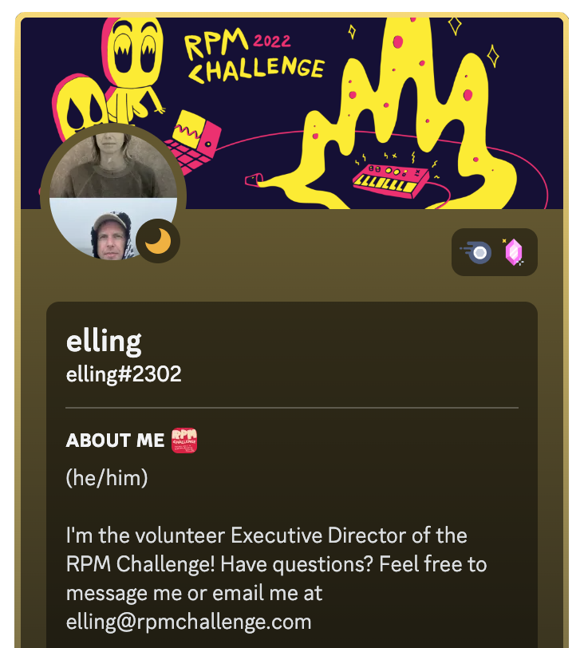
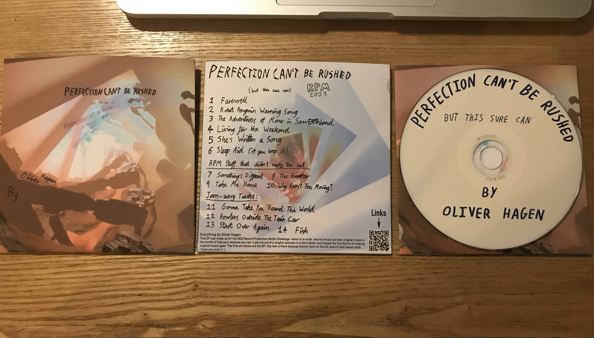

An EP of disparate songs, written and recorded for the 2023 Record Production Month Challenge
The Record Production Month Challenge is a yearly event taking place each February. The idea is to make an album in February, from beginning to end- because you can. For me, it was a last-ditch attempt to shake off the writer's block I'd been struggling with pretty much since the release of my last original album some time earlier. At this I succeeded, and finally managed to get some fun out of writing and recording again.
Easily the best part about the challenge was the constant engagement with other musicians via a Discord server run by a really cool dude called Elling. Throughout the month, people posted updates on their progress through the stages of writing, recording, mixing and then wrapping everything up. This helped a lot, both in terms of motivating me to keep up with the crowd, and in consoling me when I felt like I was falling behind. Specific channels for discussion of the different hardware/software we used, tips and tricks for writing and production, and general goings-on ensured there was always something to talk about, and someone to talk about it with. Altogether, the community felt like a musicians haven.
I initially planned on signing up for just one song- the month wasn't very long, I was very busy with uni interviews and a new job, and I had little faith in my ability to write. I went for for an EP instead in order to push myself hard into the challenge, and to stop myself spending an entire month agonising over a single song.
The songs for the EP were written almost entirely within the month (as per the RPM challenges preferences), with only the smallest seeds of Farewell and Living for the Weekend existing beforehand. The opening lines of the former (up to '...without a minion') had been in my songwriting book for a few months, and were a reaction to an actual person - a first for me. The rest of the song appeared pretty much spontaneously during a three-hour train ride. Having no instruments around to demo the song on, and no reasonable cause to begin singing in the crowded train car, I had to imagine the song entirely within my head. I think this helped a bunch, because instead of following the easy patterns my hands fall into when playing piano or ukulele, I went wherever the melody took me, without consideration towards playing it (this made the ukulele a bit difficult in the instrumental break).
Two other songs came fairly quickly- Robot Penguin Warning Song and The Adventures of Mono in Sawtoothland both came from procrastination jamming while trying to record Living for the Weekend, which was the 'serious song' on the EP. Mono in Sawtoothland was initially me improvising chord patterns over a drum loop, with two overdubs providing the melody line and low bass part. I'm pretty happy with it- all the synth sounds, though basic, are designed from scratch as part of my effort to learn synthesis, and the chord progressions are reasonably fun- being derived mainly from Vulfpeck and Kraftwerk, which worked better in combination than I would have expected.
The two songs I had to sit on for a while were She's Written A Song and Living for the Weekend. I added little bits to both throughout the month, until about a week before the 1st of March deadline. The former song was recorded all at once when I had it written, whilst the latter was attempted again and again throughout the month, the sound gradually moving closer and closer towards the final arrangement.
It's quite interesting how much the places I was writing in have been embedded in my memory, maybe as a result of my brain working hard and drawing on my surroundings for inspiration. I can still smell the train air, and see the break room and nearby sushi place from my job.
Having little time for recording, I decided early on to abandon any notion of perfect-sounding performances or mixing, but remained committed to the best arrangements I could possibly work out. At this point I'd moved past my earlier obsessions with the dense sounds of bands such as ELO, Muse, Queen and Oasis, and was more interested in the sparser arrangements found in early Talking Heads and Vulfpeck, amongst others. The individual instruments could be heard and understood all at once, lending a baroque air to the songs. Bassline, rhythm guitar, drums, melody, (maybe) countermelody- that's it. I think what I like about this style is that it feels more achievable- I can readily imagine real-life musicians playing the songs live (not so easy with the 50-guitar-layer Oasis tracks), and I can picture myself and my peers doing it- inspirational stuff.
I applied this arrangement ethos throughout the EP, aiming to at all times keep the number of musicians required to play the songs down to (at most) four, if not less. I also decided against using any MIDI instruments or synth presets, so that I retained responsibility for the performances and sound design. This really helped me to get to grips with my synth and the onboard drum machine, and gave me a greater sense of achievement at the end of the process, even if some of the sounds were a little crude.
The recording environment played a large part in the writing process. Once I'd heard about the RPM challenge in late January, I immediately began setting up the music room as a recording studio, making use of the little mixing desk my parents had bought my brothers and I many years earlier, when we were all too small to understand it at all. The synth and keyboard were hooked up to the mixer, along with two room mics used to record the piano. These all went into my interface, along with a vocal mic and line input for my ukulele. The end result of all this was a room where every instrument could be recorded without any setup time, enabling ephemeral ideas to be recorded. I hadn't realised before how much the knowledge that a certain instrument wasn't hooked up had dissuaded me from using it at the time, with a noticeable impact on the songwriting process.
My setup wasn't entirely without its faults- one of the room mics hummed, and the whole system had a slight buzz, which became noticeable in some of the final mixes as it was duplicated with every synth, keyboard or piano track. I quickly decided to lean into the messy sound, which in itself was quite liberating, and allowed me to care less about small details- after all, who's going to listen for ever-so-slightly out of tune/time notes when the whole track's humming?
This was much less of a hair-tearing affair than in previous projects, thanks to the aforementioned allowing of faults. Instead of trying to make everything perfect, I tried to make it fun for me. There's some hard-panning that probably only works properly in headphones. There's not always enough bass, and the vocals probably aren't quite the right volume compared to the instruments. However, I think the lack of stress I put on getting everything completely perfect ultimately left me with a better end-product; there're no tiny, over-engineered tweaks or really complex effect chains- just volume, EQ, panning, compression and reverb. Hopefully, less added complexity has meant fewer chances to go badly wrong.
I dislike doing these. Pretending to play an instrument or sing while both being in-time and showing the appropriate conviction is not fun. My antidote to this was to video myself the entire time I was recording the songs. I first attempted to do this with my phone, but it quickly ran out of memory and crashed while recording, losing a songs worth of footage (the footage of She's Written A Song, in case you're wondering). My parents old camcorder stepped up to the plate, and captured the entire rest of the recording sessions without issue. I was able to cull from those videos the sections containing the final takes of the songs, and use those as the basic for the videos.
To enhance the videos beyond just footage of me recording the songs, I added visuals wherever they felt appropriate. As is normal for me, once I'm past the stage of awkwardly recording myself, I'm able to enjoy creating videos. I think I'm just allergic to seeing myself on camera. The quickest videos to do were for Farewell, Robot Penguin Warning Song, and Living for the Weekend, none of which required much effort- DALLE.2 AI image generation is quick, as is printing out lyrics, filming them, and added them as a layer above the initial video. The software I used for the majority of the videos, HitFilm Express, was super useful - the blend modes made adding elements to existing footage really easy, and it all looked good without much effort at all.
The videos that took the longest were She's Written A Song - which involved filming three takes and compositing them on top of each other via some fairly simple but laborious masking - and The Adventures of Mono in Sawtoothland, the graphics for which were made in three separate programs- the Mono character and initial titles were made in Keynote, the 'flood' was made in the 2D physics simulation programme Algodoo, and the 'I'm going to die' game was made in Scratch. These separate sections were each screen recorded and then composited together via HitFilm to make the final video. As screen recording introduces lag, I had to run both the Scratch game and the physics simulations at reduced speeds, and then speed up the recordings in the edit to produce tolerable framerates.
It's not a perfect EP, it's not even necessarily a great EP, but I think it's a good EP. I managed to get over my fear of producing bad music by producing what started out as bad music, but gradually seemed to improve over the course of the month. There are some bum notes in there, especially in the more complex tracks, but I don't feel like they take much away from the actual songs, which still feel good to listen to and play.
Between this EP and the last album, I feel like I'm starting to build up a collection of half-decent songs for use in a band, should I ever find myself lucky enough to be in one. Overall, the EP felt good to make, both on a personal artistic level and as part of the RPM community. I'm looking forward to doing it all again next year.
It's available on Bandcamp, Spotify, and YouTube.